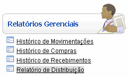
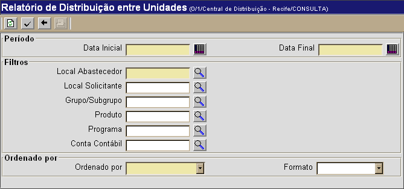

Relatório de Distribuição [ Voltar ]
Utilize esta tela para visualizar um relatório das movimentações realizadas entre unidades. O
relatório pode ser
específico para um local, grupo ou produto.
O formulário"Relatório de Distribuição"
encontra-se dentro do menu "Relatórios
Gerenciais".

Ao clicar no formulário, a seguinte tela
será exibida:

Para gerar o
relatório de distribuição entre unidades, siga os passos abaixo:
1º Passo:
configure o período, filtros e tipo de ordenamento para a consulta. Os campos em amarelo são obrigatórios.
- Data Inicial / Final.
Informe nestes campos as datas inicial e final para compor o período do relatório;
- Local Abastecedor. Informe aqui o local abastecedor para esta consulta. Clique no botão
 [Procurar] para selecioná-lo a partir de uma listagem contendo todos os locais cadastrados; [Procurar] para selecioná-lo a partir de uma listagem contendo todos os locais cadastrados; - Local Solicitante. Se desejar, informe aqui um local solicitante específico. Clique no botão [Procurar] para selecioná-lo a partir de uma listagem contendo todos os locais cadastrados;
- Grupo/Subgrupo. Se desejar, você pode especificar um determinado grupo/subgrupo para esta consulta. Clique no botão [Procurar] para selecioná-lo a partir de uma listagem contendo todos os grupos e subgrupos cadastrados;
- Produto. Se desejar, você
pode escolher gerar o relatório de distribuição para um produto
específico. Neste caso, informe-o aqui. Clique no botão [Procurar] para selecioná-lo a partir de uma listagem contendo todos os produtos cadastrados;
- Programa. Se desejar, você pode escolher gerar o relatório de distribuição para
um programa específico. Neste caso, informe-o aqui. Clique no botão [Procurar] para selecioná-lo a partir de uma listagem contendo todos os programas cadastrados;
- Conta Contábil. Especifique aqui uma conta contábil específica para esta consulta. Clique no botão [Procurar] para selecioná-lo a partir de uma listagem contendo as contas contábeis existentes;
- Ordenado por. Selecione a forma de ordenamento desejada para o relatório: Por Código do Produto, Por Descrição do Produto ou Por Data/Hora da Movimentação;
- Formato. Defina aqui o tipo de relatório desejado: Completo, Simplificado ou Financeiro. Se nenhuma opção for selecionada, o relatório completo será exibido.
2º
Passo: clique no botão para gerar os dados do relatório. Os resultados da pesquisa serão exibidos na parte inferior da tela. para gerar os dados do relatório. Os resultados da pesquisa serão exibidos na parte inferior da tela. 3° Passo: para visualizar e imprimir o relatório, clique no botão  . . Para imprimir o relatório, clique no botão  [Imprimir]
do navegador. Para voltar à tela anterior, clique em [Imprimir]
do navegador. Para voltar à tela anterior, clique em  [Voltar]. [Voltar].
Ir
para o topo da página
|